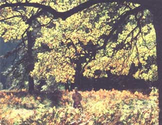
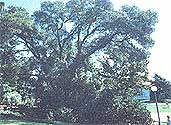
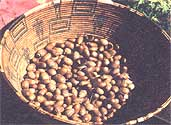
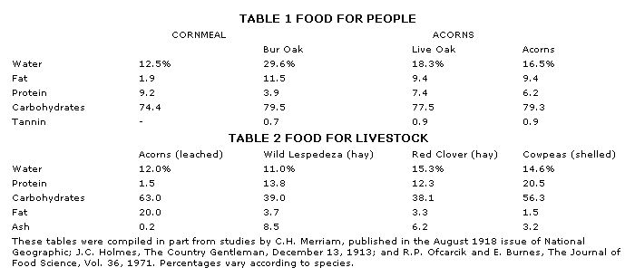

Before white settlers ventured onto this continent, acorns were one of the staple foods of many of its indigenous peoples. The oak crop provided a reliable and nutritious source of food for these Native Americans, and many families would harvest and eat as much as half a ton of acorns in a year's time. The nuts were also boiled or crushed to produce an oil, which was prized for cooking and as a salve for burns and wounds. In addition, acorns were the main diet of the deer, bear, and the many other animals and birds that were consumed by the Indians.
However, the use of acorns as a human food began declining in the early 1600's as oak forests were cleared for annual crop production-in particular, for corn. Nowadays, almost four billion bushels of corn are harvested in this country every year, while only a handful of Native Americans and wild-food enthusiasts take advantage of the free-for-the-gathering acorn bounty. It seems a shame that the food which once served as the staff of life to human cultures is now widely disregarded.
Acorns have even lost their place as a forage crop for livestock in this country ...although they're still widely used for this purpose ill other lands (particularly in southern Europe, where oaks supply fodder for hogs). Whereas our frontier forebears fed themselves on acorn-fattened pork, the U.S. now relies on corn as the basis for meat production.
THE TRADE-OFF
Unfortunately, when the costs and benefits of growing corn and acorns are compared, it becomes apparent that the changeover has not been much of a bargain. As a perennial tree crop, acorns can be grown year after year without cultivation, fertilization, irrigation, or-in most cases-spraying for pests. The oak also has the ability to yield well on marginal land, including steep, erosion-prone hillsides. Acorn production has other benefits, as well. The trees contribute to soil deposition, provide increased rainfall retention for replenishing the groundwater supply, act as windbreaks, supply summer shade, and furnish harvests of hardwood lumber and firewood and-in the case of one oak (Quercus suber)-cork. What's more, the tannin present in many acorn varieties is a sought-after commercial product.
Corn, in contrast, is an annual that usually requires much cultivation (which contributes to soil erosion), heavy applications of fertilizers and pest-control sprays (resulting in adverse environmental effects), and, often, irrigation (thus helping to deplete our ground-water stores).
Furthermore, as shown in Table 1, acorns are nutritionally quite similar to corn. You'll note that the nuts are exceptionally high in fat and carbohydrates ...and the kernels are reported to be easy to digest, as well, once the tannin is removed.
Although it would be unrealistic to suggest that the American farmer immediately switch from growing corn to raising acorns, a gradual incorporation of selected oak species into the farming scheme would make economic sense. Corn yields generally range from 2,500 to 10,000 pounds per acre. In comparison, acorn yields in natural forests have been recorded as high as 2,000 pounds per acre from the live oak (Q. virginiana), and-in a good year-I've recorded black oak (Q. velutina) yields per tree that would amount to more than 6,000 pounds per acre in a pure stand. And J. Russel Smith, in Tree Crops: A Permanent Agriculture, cited an individual oak that produced a full ton of acorns annually. If a 100-foot spread is assumed for that tree, it seems possible that a yield of 10,000 pounds of acorns per acre could be achieved. [EDITOR'S NOTE: These figures are the exception, with typical yields in an oak forest being considerably lower and variable from year to year.]
Granted, acorn production does have its, problems. Among them re the variable time (anywhere from 3 to 20 years) before a tree will bear, the competition with forest creatures for the harvest (as well as actual production difficulties in procuring the harvest), weevil and fungal damage to the crop, the need for leaching out the bitter tannin in some acorn varieties, and the unusual flavor-some folks describe it as rather bland-and dark color of the flour. In other words, don't go out and establish a plantation of oaks and expect to make a living solely from the acorn harvests! However, in light of the many admirable qualities of the oak, it's clearly time we gave the acorn its due consideration both as a source of livestock fodder and as a food for human consumption.
ACORNS FOR EATING
There are at least 50 species of deciduous or evergreen oak trees native to this country. And because the oaks hybridize readily in nature, new species are continually being discovered. Conventionally, oaks have been divided into two subgroups: the white oaks and the black, or red, oaks. White oak acorns mature in one year, have a smooth inner cup surface, and are generally sweeter than the acorns of the black oaks ...while the black oak acorns take two years to mature, have hairy inner cap surfaces, and taste bitter. However, these characteristics are somewhat arbitrary and vary greatly among the many hybrid forms, so for the purposes of this discussion, I've broken the species down into sweet and bitter acorns (see the accompanying guide for a sampling of species).
Many types of oak have acorns that are perfectly edible to their raw, just-harvested state. In particular, I've gathered sweet acorns from the gambel oak (Q. gambelii ), the mongolian oak (Q. mongolica), and the huckleberry oak (Q. vaccinhfolia) ...and other foragers have reported similar sweetness for the chinquapin oak (Q. muehlenbergii ), the white oak (Q. alba), the swamp chestnut oak (Q. michauxii ), the ballota oak (Q. ilex var. rotundifolia), and the emory oak (Q. emoryi ). Undoubtedly, there are other equally tasty varieties that deserve further investigation.
In addition to these sweet species, there's hope for finding sweet individuals among the more bitter, tannin-containing types, since even trees of the same species can vary considerably in the flavor of their nuts. (I've eaten supposedly bitter acorns that had a flavor similar to that of cashews.)
F ROM THE FORESTTO THE FRYING PAN
Since some species of oaks grow in virtually every part of the U.S., you shouldn't have much trouble finding a suitable acorn hunting ground. Sample the bounty from several oaks to determine your best local tree, and then begin gathering the goods in earnest. Pick only freshly fallen acorns, and discard any kernels with weevils. (In fact, if weevil or rodent competition is particularly fierce in your area, you might want to harvest the acorns directly from the tree. Ripe nuts will have a characteristic blush and should pull from the branches easily.)
Once you've accumulated a substantial haul (for reference purposes, it takes roughly three cups of acorns to make one cup of meal), you'll need to decap, hull, and dry the kernels. Some varieties are easier to shell after roasting, while others are simpler to hull when fresh. And although you can heat your harvest in a low (200°F) oven, I prefer to let the nuggets sun-dry. Do be sure to discard any discolored acorns, as they may spoil the taste of the other nuts.
If the acorns are bitter-tasting, you'll need to leach out the tannins present in the kernels. Fortunately, these substances are water-soluble, so the leaching process is simply a matter of repeated rinsings. First grind the acorns, either by hand using the mortar-and-pestle method or by adding a bit of water to the nuts and whizzing them in a blender (a coffee grinder also works well for pulverizing small harvests). Next, place the meal in a nylon stocking, a cloth bag, or a dish-towel-lined colander and rinse the mass under a slow stream of water while gently working the pulp with your hand. When the liquid runs clear and the bitterness is gone from the meal, you're done. Dry the resulting chocolate brown flour in a solar dryer or a low oven (you may need to regrind the meal after it dries if it becomes clumped). [EDITOR'S NOTE: Lee Peterson, in his excellent reference, A Field Guide to Edible Wild Plants, suggests leaching the tannin by boiling the whole kernel (stripped of its shell), or the acorn meal, in repeated changes of water until the liquid no longer turns brown.]
The possibilities for using acorn meal are limited only by your own ingenuity. You can add it to soups, stews, and stuffings or use it to replace part of the flour or cornmeal in your favorite bread, cake, or cookie recipes (when substituting, you may want to reduce the amount of oil called for, since acorn meal is high in fat). As you try the recipes given here or some of your own creations, keep in mind that considerable variation occurs between different acorn species and even between individual trees ...so you might want to experiment with several types of acorns, and stick to the easier (and less expensive) recipes, until you find a variety that suits your tastes.
TRADITIONAL INDIAN ACORN MUSH
1 cup of acorn meal
3 cups of water
a pinch of clean ash (optional)
To make this Native American staple food, mix the ingredients and simmer the mush for about half an hour in a double boiler. Or, to be truly authentic, cook it by dropping hot stones from the fire into the batter, then peel the "acorn chips" from the rocks.
TONY MONTOYAS ACORN TORTILLAS
3 cups of acorn meal
3 cups of whole wheat flour
1 tablespoon of baking powder
1 teaspoon of salt
1 teaspoon (or more) of shortening
1/2 cup of warm water
Combine the dry ingredients and work in the shortening-adding water as necessary-until the mixture is the consistency of pie dough. Then roll the dough into tortillas and fry them in oil or toast them in the oven. These tortillas are great for tacos or tostadas, or just as snack chips.
PEGGY CARKEET'S ACORN BREAD
1 cup of oil
5 beaten eggs
1-1/4 cups of honey
1-1/2 teaspoons of vanilla
3-3/4 cups of acorn meal
1-1/8 cups of whole wheat flour
1-1/2 teaspoons of salt
1/2 teaspoon of baking powder
1-1/2 teaspoons of baking soda
1-1/2 teaspoons of cinnamon currants, pine nuts, or elderberries (to taste)
This recipe makes a one-of-a-kind bread that fairly begs to be eaten. Thoroughly mix the first 10 ingredients, then add (to taste) currants, pine nuts, or dried elderberries ...pour the batter into three greased loaf pans ...and bake the bread at 350°F for an hour or more.
EDITOR'S NOTE: TO FIND OUT MORE about acorns and other edible-nut tree crops, you might want to peruse J. Russell Smith's Tree Crops: A Permanent Agriculture (Devin-Adair, 1977), which is out of print but may be available at your local library. Another excellent volume is Nut Tree Culture in North America, edited by Richard A. Jaynes and published by the Northern Nut Growers Association, Inc.
Related Articles:
Grow Your Own
Forager's Guide to Acorns
|
 Since you can find oaks in almost every part of the United States,it's easy to locate a suitable acorn hunting ground. Foraging in the wilds ... or even among ornamental oaks in a city park ... can provide you with a bountiful harvest of kernels. |
 |
 |
|
 |
|
|